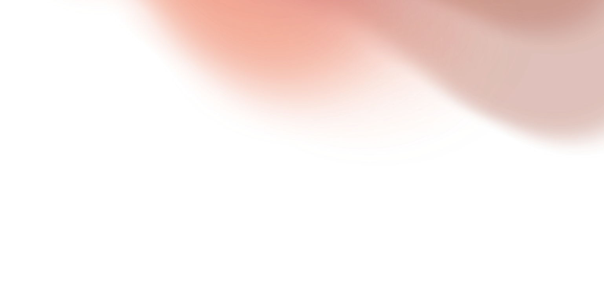
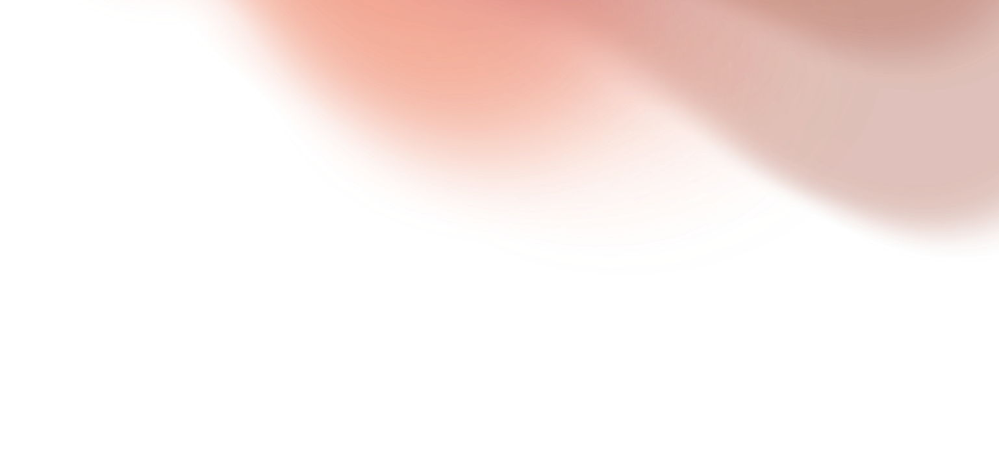
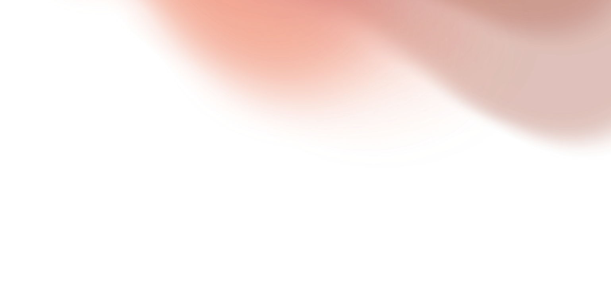
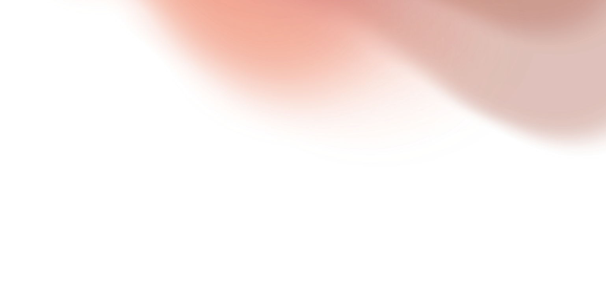

Our work stemmed from the study of artificial intelligence. With it being a predominant topic currently circulating in the media, we decided to explore it and build our own interpretation of a possible fictional future that it may lead to.
The whole idea of artificial intelligence has put fear into the public, with its ability to mimic and complete some tasks at the level of, or even better than a human. We aimed to target the possible flaws that artificial intelligence could have within the near and not so near future.
Our concept ‘Terra-Incognita’ (meaning unknown or unexplored territory) was created from the idea of emotions. Or rather, the AI’s inability to understand and comprehend human emotions. As a machine, AI only perceives data and information through number patterns and calculated data.
This then begs the question, will AI ever become truly sentient? And if so, how is this possible? When will this happen? What could this future lead by ruling artificial intelligence look like?
All these questions piqued our interest, birthing our ideas. We wanted to create a living breathing world,
We present Terra Incognita, In our depiction of a dystopian future dominated by advanced Artificial Intelligence, humanity finds itself categorised into specialised roles that align with their individual strengths and weaknesses, meticulously assigned by the omniscient AI rulers. This world bears a familiar resemblance to the conventional depiction of a bleak technological future portrayed in various forms of media. However, While the AI relentlessly strives for perfection by augmenting and optimising human processes, it remains incapable of comprehending the profound depths of genuine human emotions. The AI's disdain for the archaic and imperfect ways of humanity is shown, yet it still admires their unparalleled capacity to experience and convey emotions. an aspect that eludes their mechanical understanding. Within the heart of the city known as the Ascent, a gripping scene unfolds: an interrogation, where an AI entity seeks to extract valuable information from a human subject. The AI methodically analyses the subject's facial expressions and emotional responses, aiming to enhance its understanding of the intricacies and nuances of human emotion.
Regarding the aesthetics of our project, as it is a collaborative work, both of us share vastly different artistic styles. We found that our two styles did not create a completely cohesive experience, however, the way in which we implemented both our styles fits the narrative well. A more sketchy and animated aesthetic is used within the interrogation sequences of the video.
This was originally planned to be even more rough and sketchy to reflect the imperfection and nuances of human nature and expression, in contrast to the AI’s form being quite symmetrical and balanced.
I aimed to implement a more photorealistic artstyle for a majority of the environment depictions as these were more aimed to reflect memories or past events that have happened within this universe. I used a wide variety of reference imagery and downloaded brush asset packs within procreate to build these artworks. My main focus was to convey a story within each piece, that correlated with the running dialogue within each scene. However, I chose to create the works before completing the dialogue and editing, making it quite difficult to structure them and use them to their full potential.
If I were to improve this project, I would have liked to put more emphasis on the individual artworks (This was the original concept for the project) as I put a lot of time and effort into each work that were shown for only a few seconds each.


The sound design was another crucial component of our narrative, as it grounded the world of Terra-Incognita, and helped breathe life into our dystopian future. An expansive list of sound effects and sound scapes were incorporated from non-copyright sources, as well as some sounds recorded by ourselves. These sounds varied from droning eerie synth chords and broad open winds howling, to piercing screeches and screams of terror.
Over 80% of the soundscape was created through sourced sound effects from www.zapsplat.com, a free non-copyright sound library.
Following the tutorial ‘How to Animate Still Images with After Effects and Photoshop = https://www.youtube.com/watch?v=NrBHiEuNhiE’ by Dansky on Youtube, I was able to bring my illustrations and landscapes to life through implementing the parallax effect. This is created through the layering of various 2d elements within an After Effects composition, and shifting their placement within the foreground, midground and background. This paired with various visual effects and overlay layers ultimately created a vivid and fluid motion to my illustrations.


For the character design, we aimed to reflect the environments they live within. In this society, the AI live at the top of the hierarchy, with humans each classified to a certain occupation based on their skills and abilities. The protagonist in our story is from the undergrounds, where humans now reside as they are no longer deemed worthy to live amongst the Ai above in the ascent.


VIDEO AND EDITING REFERENCES
https://youmescript.com/= script writing website
-‘How to Animate Still Images with After Effects and Photoshop = https://www.youtube.com/watch?v=NrBHiEuNhiE’
-https://www.zapsplat.com/?s=savanna&post_type=music&sound-effect-category-id= = Zapsplat.com where the sounds are from
With the help of a couple tutorials, i was able to figure out how to implement the parallax effect as well as the fade in text using basic Javascript:
HTML RESOURCES FOR THE CREATION OF THIS WEBPAGE
https://youtu.be/Jt2yNZdOHxQ = parallax
-https://www.youtube.com/watch?v=VplDlwLTR50 = fading text
-